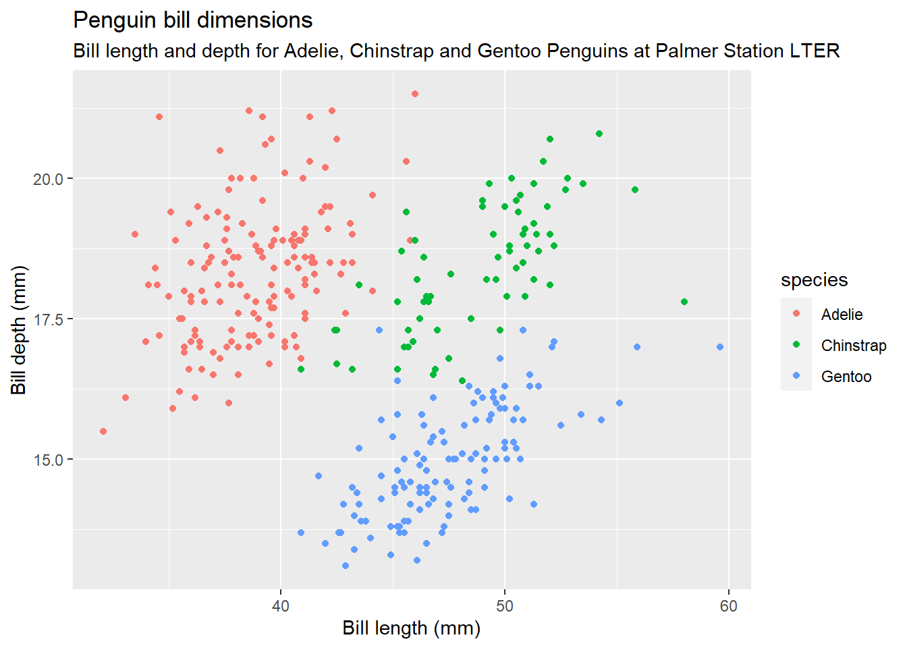

24 Palmer Penguins Review
24.1 Use the penguins dataset from the palmerpenguins pacakge for the following:
- Extract a data frame that excludes the Adelie penguins. Call this data frame
q1. - Extract a data frame that excludes the Adelie penguins and retains those with bill lengths between 40 and 50 mm. Sort it in decreasing order by bill length. Call this data frame
q2. - Calculate the mean bill length and bill depth for each of the three species of penguins in once step (not three different calculations). Do these statistics line up with what you see in the penguins plot below?
- Consider a new metric called
bill_sizethat’s the sum of the length and depth. What is the average bill size and it’s standard deviation among each species, broken out among each of the islands? (that is, nine pairs of statistics) Sort your resulting data frame in decreasing order by average bill size. - Answer in words (after you have the numerical answers):
- Which island has the biggest penguins?
- Which penguins species are the biggest?
- Does the size of a penguin depend on the island it lives on?
- Does the size of each species of penguin depend on the island it lives on?
- Create a linear model using bill depth and bill depth to predict body mass. What would you predict for a penguin with bill length of 50 mm and a bill depth of 23 mm? What about a Gentoo with the same bill dimensions?
- Create the plot below (or very similar). FYI, in case these questions are in black and white, each penguin species should be a different color in the plot.
